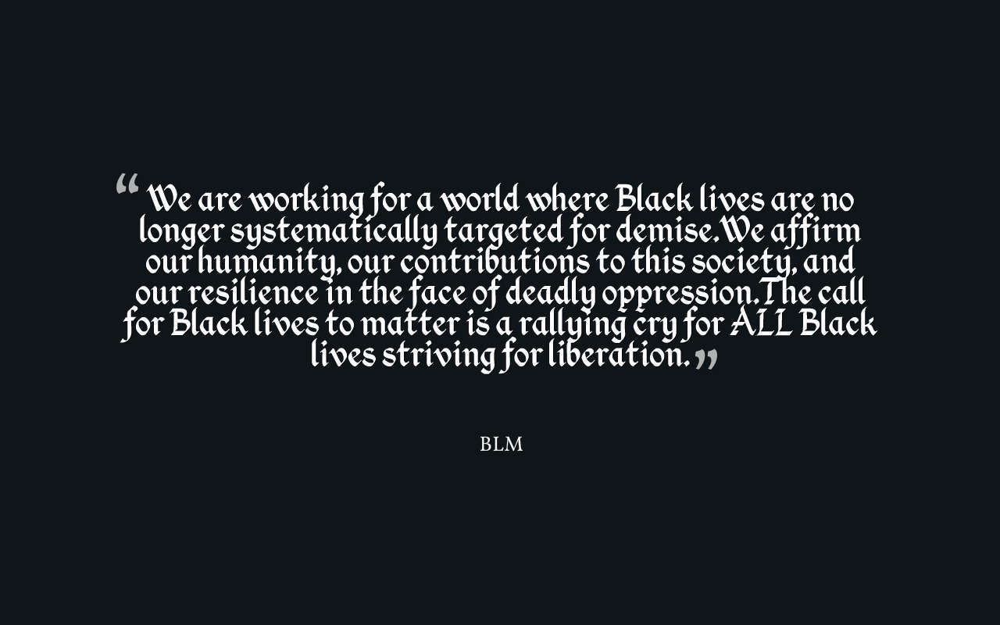

The feelings of frustration and unfairness felt by African Americans decades ago continue to this very day. In order to get by in society, African Americans are often put in a situation where they must conceal their pain and frustration.
Through protesting in organizations such as Black Lives Matter, people are effectively "taking off their masks"

The ideas of oppression and concealment that Paul Dunbar expressed in his poem “We Wear the Mask”, are the basis of the 21st century movement, Black Lives Matter.
